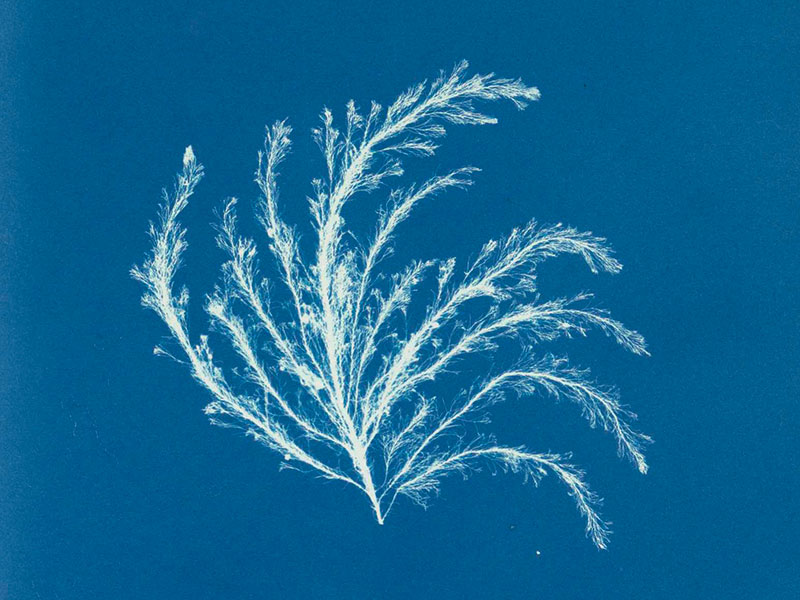

INF1FT

Anna Atkins foi uma botânica e fotógrafa inglesa. Muitos consideram-na a primeira pessoa a publicar um livro ilustrado com imagens fotográficas. Algumas fontes afirmam que ela foi a primeira mulher a criar uma fotografia.
NASCIMENTO: 16 de março de 1799
Tonbridge, Kent, Inglaterra
NACIONALIDADE:inglesa
MORTE:9 de junho de 1871 (72 anos)
Anna Atkins (1799 – 1871) foi uma botânica e
fotógrafa inglesa, criadora do primeiro livro ilustrado com
fotografias da história: um guia botânico com imagens de algas,
todas por ela coletadas e registradas através de uma técnica
chamada cianotipia.
Filha do químico, mineralogista e zoólogo John
George Children e próxima de famílias com tradição
na Astronomia (John Frederick William Herschel)
e na fotografia alternativa (William Henry Fox Talbot) ,
Anna foi incentivada desde criança em suas investigações
e interesses por plantas, animais e experiências.
A maioria das meninas neste período
(Anna nasceu pouco antes do início da Era Vitoriana)
era criada e educada visando exclusivamente o casamento
e a criação de filhos.
Anna, ao contrário, cresceu rodeada por um universo
científico e investigativo, recebendo uma educação
incomum para seu tempo, sempre apoiada e aconselhada
por seu pai a ilustrar suas pesquisas científicas com
muitos desenhos e detalhes.
Suas gravuras de conchas foram utilizadas para
ilustrar a tradução de seu pai para a obra de Lamarck,
"Genera of Shells".
Foi com Talbot que Anna aprendeu técnicas novas
relacionadas à fotografia, aprimorando seu conhecimento.
Ao ser apresentada ao processo de cianotipia descoberto
por Herschel, aprendeu o método e passou a aplicá-lo na
criação de registros das algas que coletava e catalogava
, em substituição às tradicionais gravuras.
A cianotipia é uma técnica de impressão fotográfica que
utiliza materiais sensíveis à luz, que são aplicados em papel
, sobreposto pelo objeto a ser registrado. Ao se expor o conjunto
à luz, a forma do objeto permanece da cor do papel, enquanto todo
o seu contorno é sensibilizado, tornando-se azul. A tonalidade da
cor azul depende do tempo de exposição e da intensidade luminosa.
Em 1839, Anna Atkins tornou-se membro da Botanical Society
em Londres, uma das raras sociedades científicas abertas às
mulheres.
Por uma década, ela coletou exemplares de algas
e as registrou com a nova técnica fotográfica.
Seu trabalho inédito resultou na publicação da
obra Photographs of British Algae: Cyanotype
Impressions, lançada em 1843, totalmente escrito
à mão e contendo 307 registros de algas. A
apresentação oficial da técnica de cianotipia
de Herschel à Academia de Ciências Inglesa aconteceu um ano antes.
Durante os anos seguintes, Anna trabalhou com a
técnica para auxiliar colegas de estudo, como a
botânica Anne Dixon (1799-1864), publicando mais
dois livros com cianotipos: "Cyanotypes of British
and Foreign Ferns" (1853) e "Cyanotypes of British
and Foreign Flowering Plants and Ferns" (1854).
Ao longo de seu trabalho, Anna Atkins produziu cerca de
dez mil fotogramas com a técnica, controlando intuitivamente
cada tempo de exposição à luz, baseada em sua própria experiência.
Apesar de toda a inovação e pioneirismo, foi necessário
mais de um século para que a contribuição de Anna para a
Arte e para a Botânica fosse resgatada e reconhecida.
Existem apenas 13 cópias conhecidas de seu livro,
em diferentes estados de conclusão. Você pode conhecer
o belíssimo e minucioso trabalho de Anna Atkins no
vídeo abaixo, disponibilizado pela Linnean Society:
Anna Atkins viveu em uma época onde a ciência e a
arte eram majoritariamente masculinas. É impossível
estimar quantas mulheres pesquisadoras, cientistas e
inovadoras foram ofuscadas e/ou apagadas da história,
proibidas de frequentar sociedades científicas e que
não puderam assinar suas obras mas tiveram suas pesquisas
publicadas e creditadas a homens.
Lançado pela Organização das Nações Unidas para a Educação,
a Ciência e a Cultura (UNESCO), o Dia internacional das mulheres
e meninas na Ciência, comemorado em 11 de fevereiro, promove a
visibilidade às inúmeras contribuições das mulheres nas áreas de
pesquisa científica e tecnológica e fortalece o compromisso
universal com a igualdade de direitos.
Anna nasceu em Tonbridge, em 1799. Sua mãe, Hester Anne
Children, nunca se recuperou dos efeitos do parto e faleceu
em 1800. Anna era muito próxima de seu pai, John George
Children. Anna recebeu uma educação científica pouco comum
para meninas de sua época. Sua detalhadas gravuras de conchas
foram usadas nos livros ilustrados de seu pai, traduções do livro
de Jean-Baptiste de Lamarck, Gêneros de Conchas.
Em 1825, casou-se com John Pelly Atkins,
comerciante na Índia e eles se mudaram
para o Halstead Place, a casa da família
Atkins em Sevenoaks, Kent e não tiveram filhos.
Anna continuou com seu interesse em botânica,
colecionando plantas secas, usadas para fotogramas.
O que Anna Atkins descobriu? Resultado de imagem para anna atkins formação academica Em 1842, Children apresentou a Atkins a cianotipia, um processo de captura de imagens que daria origem à fotografia moderna. Não é necessário o uso de câmeras: na cianotipia, espalha-se num papel alguns materiais sensíveis à luz, e coloca-se sobre a mistura o objeto a ser fotografado.
John George Children e John Pelly Atkins eram amigos de William Henry
Fox Talbot. Anna aprendeu diretamente de Talbot sobre suas invenções relacionadas
à fotografia: a técnica do desenho fotogênico, onde um ambiente é colocado sobre
um papel com sensibilidade à luz e então exposto ao sol para produzir uma imagem
e o calótipo.
Sabe-se que Anna teve acesso à uma câmera em 1841.
Algumas fonte afirmar que Anna foi a primeira mulher fotógrafa.
Outras fontes apontam que Constance Talbot, esposa de William Fox
Talbot, foi a primeira fotógrafa. Como nenhuma fotografia original
de Anna Atkins e de Constance Talbot sobreviveu aos dias de hoje, o
embate continua.
